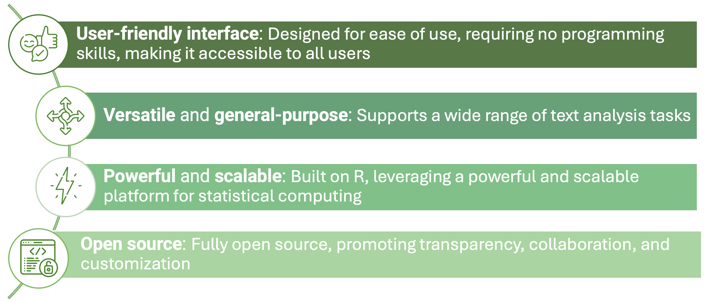
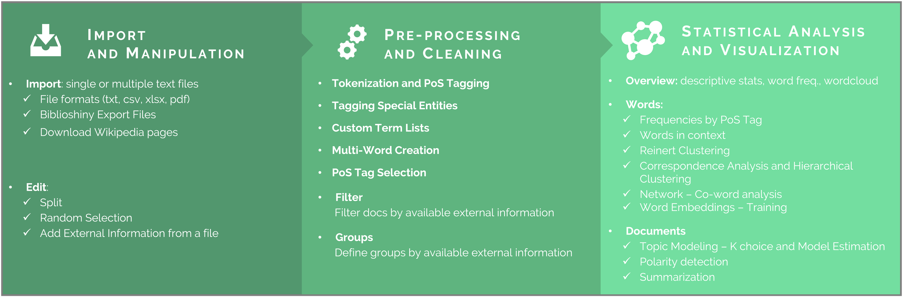
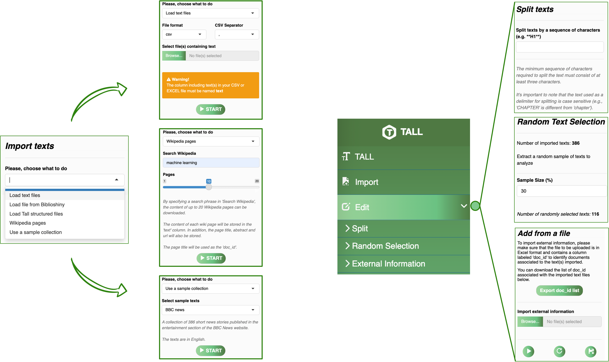
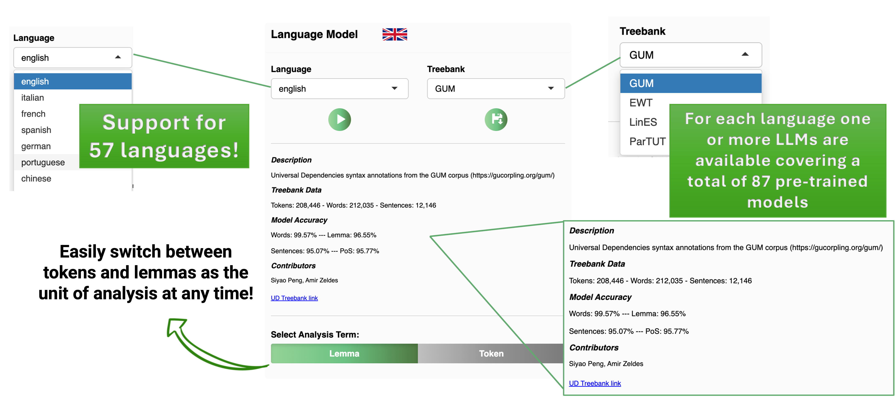
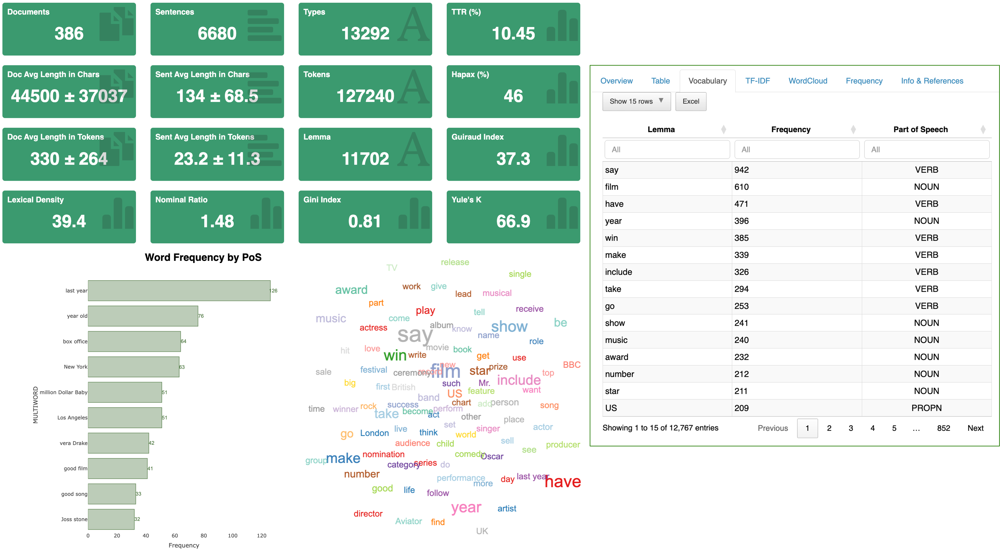
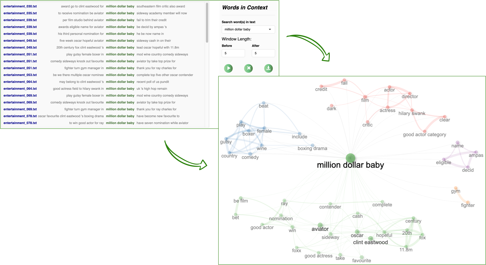
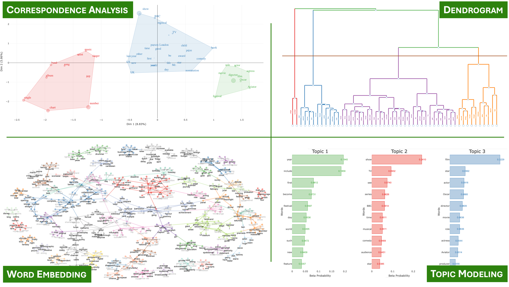
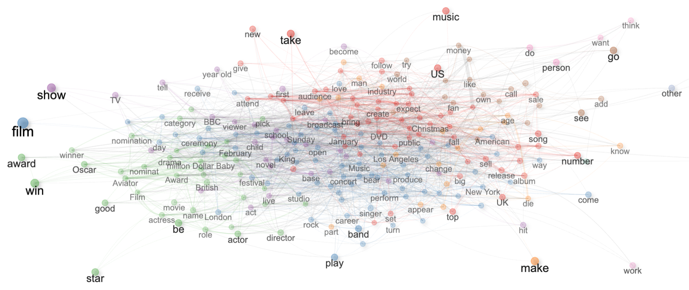
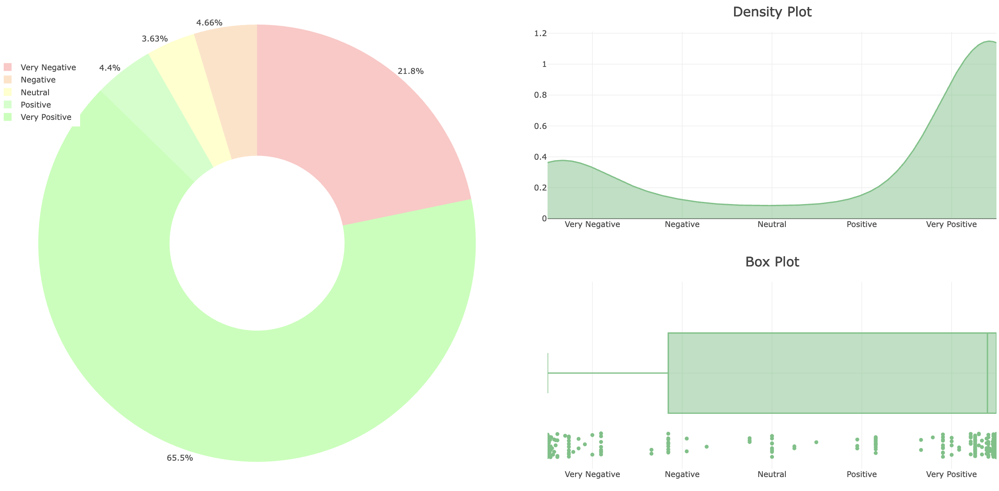
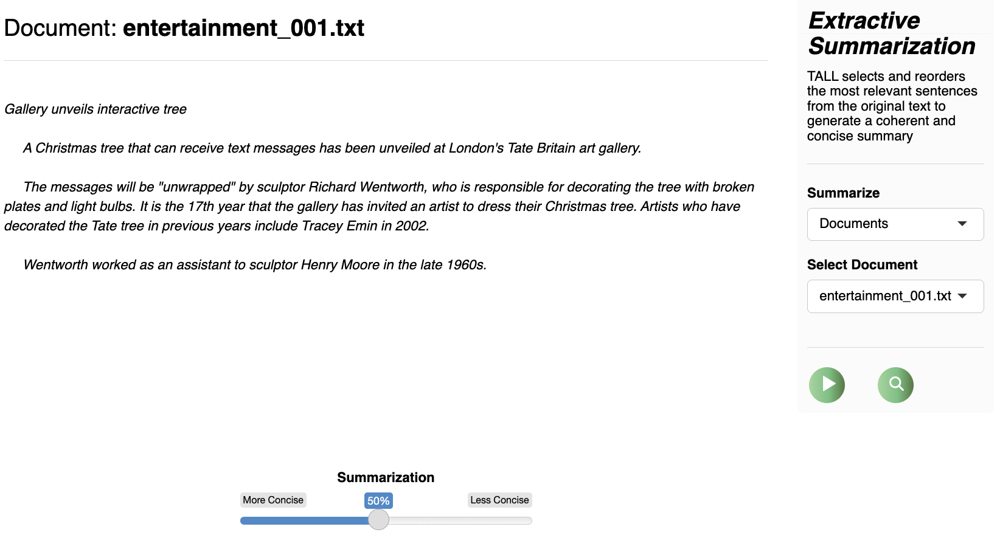

Key Features of TALL
TALL (Text Analysis for All) is a powerful and user-friendly R Shiny application designed to address the needs of users without extensive programming skills, providing a versatile and general-purpose tool for analyzing textual data. Built on the R ecosystem, TALL supports researchers, students, and professionals in performing quantitative and qualitative text analyses — without writing a single line of code.

To learn how to install TALL and explore its features in detail, visit the Documentation page.
🤖 TALL AI – Your AI-Powered Text Analysis Assistant
TALL now features TALL AI, a built-in artificial intelligence assistant designed to support users throughout their analytical journey. It bridges the gap between data and interpretation by offering:
- 🧠 Automated interpretation of statistical and lexical outputs
- 💬 Critical discussion prompts based on emerging patterns and thematic clusters
- 🔍 Conceptual guidance across multiple analytical modules — including topic modeling, sentiment analysis, clustering, and more
Discover the full potential of TALL AI 🚀
🚀 TALL Workflow
TALL offers a seamless and structured workflow that guides users from raw text to interpretable insights — no programming required.
- Import text data from a variety of sources and formats:
.txt,.csv,.xlsx,.pdf, Wikipedia pages, or Biblioshiny export files.
- Pre-process texts using integrated NLP techniques — including tokenization, lemmatization, PoS-tagging, and semantic filtering.
- Analyze your corpus with multiple modules: word frequencies, co-occurrence networks, correspondence analysis, clustering, topic modeling, summarization, and more.
- Visualize & Export results as high-quality plots, structured tables, or
.tallfiles for further use and reproducibility.

🗂️ Text Import & Metadata Integration
Load raw text files in various formats
Import
.tallstructured files to resume previous sessionsImport data directly from Biblioshiny – the Shiny web interface of bibliometrix, the R package for science mapping
Dynamically add metadata, split documents, or group them based on external information

🧹 Advanced Preprocessing Pipeline
TALL includes a robust and modular preprocessing engine that prepares text data for advanced analysis through:
- PoS-tagging and lemmatization powered by pre-trained models based on the Universal Dependencies framework
- Multilingual support, including a wide range of languages and domain-specific variants tailored for social media, news, and scientific texts
- Semantic tagging of special entities and automated multi-word expression detection
- Flexible filtering and grouping of tokens or lemmas, based on user-defined criteria or external metadata
All preprocessing operations are transparent, reproducible, and designed to ensure consistent input quality for downstream analyses.

📊 Descriptive Statistics & Lexical Insights
A set of tools for exploring the lexical structure of your corpus, including:
- Vocabulary distributions and TF-IDF weighting
- Word clouds for visualizing term prominence
- Word in Context analysis and semantic ego-networks to examine word usage patterns
These tools allow users to investigate specific terms within their full textual context — across documents, sentences, or defined groups — supporting both qualitative interpretation and quantitative analysis.


📈 Topic Detection
Methods to uncover latent themes and conceptual structures within a corpus, supporting both statistical and linguistic approaches:
- Correspondence Analysis (CA) to identify and visualize associations between terms and documents
- Topic Modelign with Latent Dirichlet Allocation (LDA) for probabilistic topic modeling and distribution-based interpretation
- Reinert Clustering to segment texts into lexically homogeneous clusters based on word co-occurrence
- Word Embedding to explore semantic similarity through vector space representations of terms
Each method includes options for parameter tuning, model selection (e.g., CaoJuan index for LDA), and rich graphical outputs to support interpretation and comparison.

🌐 Network Analysis
Construct and explore networks that reveal the relational structure of language within a corpus:
- Build co-occurrence networks based on term–document or term–sentence matrices
- Perform community detection through clustering algorithms to uncover semantic groupings
- Compute and visualize key network metrics, such as centrality, density, and modularity
- Analyze networks of words, multi-word expressions, emojis, and named entities
These tools help uncover underlying conceptual structures and patterns of term association, supporting both exploratory insight and hypothesis generation.

😃 Sentiment & Polarity Detection
TALL offers built-in tools for sentiment and polarity analysis, leveraging multiple well-established lexical resources:
- Hu & Liu Opinion Lexicon – for general-purpose sentiment classification
- Loughran-McDonald Dictionary – tailored to financial and economic texts
- NRC Emotion Lexicon – capturing a wide range of emotional tones (e.g., joy, anger, trust)
Polarity is computed using context-sensitive rules that account for negators, amplifiers, and de-amplifiers, and results are normalized through a logistic scaling function. This enables a nuanced analysis of both sentiment orientation and emotional intensity at the document or sentence level.

📚 Summarization
TALL includes an automatic summarization module based on TextRank, a graph-based extractive algorithm that identifies and ranks the most relevant sentences within a document. The method:
- Constructs a similarity graph between sentences and ranks them by centrality
- Produces summaries of variable length, from concise overviews to more detailed extracts
- Visualizes sentence relevance to enhance interpretability and support manual refinement
This functionality helps users quickly distill key information from long documents, improving readability and supporting exploratory analysis.

🧾 Reporting and Export
TALL provides flexible options for saving, exporting, and reporting results at every stage of the analysis:
- Save intermediate or final outputs as
.tallfiles to resume or replicate sessions later
- Export charts and tables in common formats such as Excel, CSV, and PNG
- Automatically include selected results in a cumulative, editable report
These features ensure transparency, reproducibility, and ease of sharing across research teams or teaching contexts.
🔓 Open Source & Extensible
TALL is fully open source and actively maintained. Its source code is available on GitHub, where users are welcome to contribute, report issues, suggest features, or adapt the platform to their specific needs.
🎯 Designed for Everyone
Whether you’re a linguist, data scientist, social researcher, educator, or simply curious about text analytics, TALL provides a robust and accessible environment to explore and interpret textual data — now enhanced with AI-powered guidance.
Ready to start your journey into text analysis?
👉 Get started now!